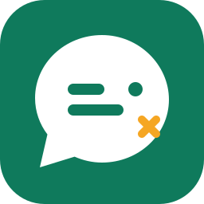

Elegí un chat para ver los mensajes.
Claude puede leer y enviar mensajes con MCP: mirá ⚙ Ajustes.

WhatsApp no manda SMS: el código de 8 caracteres aparece acá. En el teléfono andá a Dispositivos vinculados → Vincular un dispositivo → Vincular con el número de teléfono e ingresalo. WhatsApp también suele mostrar una notificación para ingresarlo.
Elegí un chat para ver los mensajes.
Claude puede leer y enviar mensajes con MCP: mirá ⚙ Ajustes.